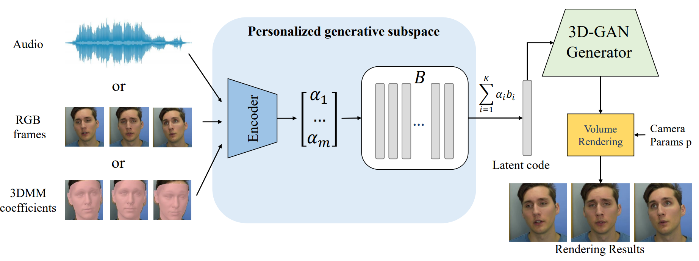
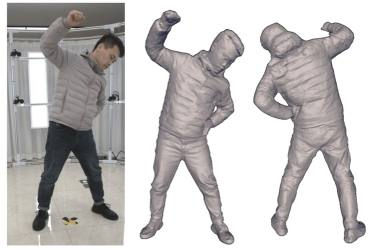

I'm on the job market! If you have any opportunities involving world models, multimodal models, 2D/3D generation, or virtual human modeling, please reach out via email at
starkjxsun@gmail.com
or
sunjingxiang_stark@126.com.
News
2024-10: We introduce DreamCraft3D++, a new technique for high-quality 3D content generation!
2024-08: One paper is accepted by SIGGRAPH ASIA 2024!
2024-03: One paper is accepted by SIGGRAPH 2024!
2024-02: Two papers are accepted by CVPR 2024!
2024-02: Started my internship at NVIDIA Research with
Koki Nagano and
Shalini De Mello.
2024-01: DreamCraft3D is accepted at ICLR 2024. See you in Vienna!
2023-09: HAvatar is accepted by ACM TOG 2023.
2023-03: StyleAvatar is accepted by ACM SIGGRAPH 2023.
2023-03: Next3D is selected as a CVPR
Highlight paper
(top 10% of accepted papers).
Introducing DeepSeek-VL, an open-source Vision-Language (VL) Model designed for
real-world vision and language understanding applications.
Publications
DreamCraft3D++: Efficient Hierarchical 3D Generation with Multi-Plane Reconstruction Model Jingxiang Sun, Cheng Peng, Ruizhi Shao, Yuan-Chen Guo, Xiaochen Zhao, Yangguang Li,
Yanpei Cao, Bo Zhang, Yebin Liu
arXiv, 2024
[Project][PDF][BibTeX]
We present DreamCraft3D++, an extension of DreamCraft3D that enables efficient, high-quality generation
of complex 3D assets in just 10 minutes.
Human4DiT: 360-degree Human Video Generation with 4D Diffusion Transformer
Ruizhi Shao*, Youxin Pang*, Zerong Zheng, Jingxiang Sun, Yebin Liu
ACM Transactions on Graphics (SIGGRAPH Asia 2024)
[Project][PDF][BibTeX]
Given a reference image, SMPL sequences, and camera parameters, our method can generate free-view dynamic
human videos in 360 degrees.
DreamCraft3D: Hierarchical 3D Generation with Bootstrapped Diffusion Prior Jingxiang Sun, Bo Zhang, Ruizhi Shao, Lizhen Wang, Wen Liu, Zhenda Xie, Yebin Liu
2024 International Conference on Learning Representations, ICLR 2024
[Project][PDF][Code][BibTeX]
We present DreamCraft3D, a hierarchical 3D content generation method that produces high-fidelity
and coherent 3D objects.
InvertAvatar: Incremental GAN Inversion for Generalized Head Avatars
Xiaochen Zhao*, Jingxiang Sun*, Lizhen Wang, Jinli Suo, Yebin Liu (* equal contribution)
ACM SIGGRAPH 2024 (conditionally accepted)
[Project][PDF][BibTeX]
We present the Incremental 3D GAN Inversion approach, which reconstructs photorealistic 3D facial
avatars in under one second from single or multiple source images.
Control4D: Dynamic Portrait Editing by Learning 4D GAN from 2D Diffusion-based Editor
Ruizhi Shao, Jingxiang Sun, Cheng Peng, Zerong Zheng, Boyao Zhou, Hongwen Zhang, Yebin Liu
2024 IEEE Conference on Computer Vision and Pattern Recognition, CVPR 2024
[Project][PDF][Code][BibTeX]
We propose Control4D, which enables high-fidelity and spatiotemporally consistent 4D portrait editing
from only text instructions.
RAM-Avatar: Real-time Photo-Realistic Avatar from Monocular Videos with Full-body Control
Xiang Deng, Zerong Zheng, Yuxiang Zhang, Jingxiang Sun, Chao Xu, XiaoDong Yang,
Lizhen Wang, Yebin Liu
2024 IEEE Conference on Computer Vision and Pattern Recognition, CVPR 2024
[Project][PDF][Code][BibTeX]
We present RAM-Avatar, a real-time photorealistic human avatar method from monocular videos that
supports high-fidelity rendering, full-body control (face and hands), and real-time animation.
VectorTalker: SVG Talking Face Generation with Progressive Vectorisation
Hao Hu, Xuan Wang, Jingxiang Sun, Yanbo Fan, Yu Guo, Caigui Jiang
arXiv, 2023
[Project][PDF][BibTeX]
We introduce VectorTalker, a novel method for creating high-fidelity, audio-driven talking heads
using scalable vector graphics, effective for various styles.
HAvatar: High-Fidelity Head Avatar via a Facial Model Conditioned Neural Radiance Field
Xiaochen Zhao, Lizhen Wang, Jingxiang Sun, Hongwen Zhang, Jinli Suo, Yebin Liu
ACM Transactions on Graphics (ACM TOG 2023)
[Project][PDF][Code][BibTeX]
We introduce the Facial Model Conditioned Neural Radiance Field, a hybrid 3D representation that combines
the flexibility of NeRF with a parametric template, leveraging synthetic renderings for conditioning.
StyleAvatar: Real-time Photorealistic Portrait Avatars from a Single Video
Lizhen Wang, Xiaochen Zhao, Jingxiang Sun, Yuxiang Zhang, Hongwen Zhang, Tao Yu, Yebin Liu
ACM SIGGRAPH 2023
[Project][PDF][Code][BibTeX]
We propose StyleAvatar, a real-time photorealistic portrait avatar reconstruction approach using
StyleGAN-based networks, yielding high-fidelity avatars with faithful expression control.
Next3D: Generative Neural Texture Rasterization for 3D-Aware Head Avatars Jingxiang Sun, Xuan Wang, Lizhen Wang, Xiaoyu Li, Yong Zhang, Hongwen Zhang, Yebin Liu
2023 IEEE Conference on Computer Vision and Pattern Recognition, CVPR 2023,
Highlight [Project][PDF][Code][BibTeX]
We propose a novel 3D GAN framework for unsupervised learning of high-quality, 3D-consistent facial
avatars from unstructured 2D images. Our approach introduces
Generative Texture-Rasterized Tri-planes for accurate deformations and topological flexibility.

High-fidelity Facial Avatar Reconstruction from Monocular Video with Generative Priors
Yunpeng Bai, Yanbo Fan, Xuan Wang, Yong Zhang, Jingxiang Sun, Chun Yuan, Ying Shan
2023 IEEE Conference on Computer Vision and Pattern Recognition, CVPR 2023
[Project][PDF][Code][BibTeX]
We propose an efficient method to build a personalized generative prior from a small set of facial images
of a specific individual. This approach supports photo-realistic novel view synthesis and face reenactment
using various input signals (images, 3DMM coefficients, or audio).

DiffuStereo: High Quality Human Reconstruction via Diffusion-based Stereo Using Sparse Cameras
Ruizhi Shao, Zerong Zheng, Hongwen Zhang, Jingxiang Sun, Yebin Liu
2022 IEEE European Conference on Computer Vision, ECCV 2022,
Oral Presentation [Project][PDF][Code][BibTeX]
We present DiffuStereo, a novel system using only sparse cameras (8 in our setting) for high-quality 3D
human reconstruction. Central to our method is a diffusion-based stereo module, which incorporates
powerful generative diffusion models into iterative stereo matching.
IDE-3D: Interactive Disentangled Editing for High-Resolution 3D-aware Portrait Synthesis Jingxiang Sun, Xuan Wang, Yichun Shi, Lizhen Wang, Jue Wang, Yebin Liu
ACM Transactions on Graphics (SIGGRAPH Asia 2022)
[Project][PDF][Code][BibTeX]
We introduce a high-resolution, 3D-aware generative model that supports local control over facial
shape and texture, with real-time interactive editing capabilities.
FENeRF: Face Editing in Neural Radiance Fields Jingxiang Sun, Xuan Wang, Yong Zhang, Xiaoyu Li, Qi Zhang, Yebin Liu, Jue Wang
2022 IEEE Conference on Computer Vision and Pattern Recognition, CVPR 2022
[Project][PDF][Code][BibTeX]
We propose FENeRF, a 3D-aware generator that produces view-consistent, locally-editable portraits.
By employing two decoupled latent codes for facial semantics and texture, we achieve flexible and
precise manipulation of geometry and appearance.
iMoCap: Motion Capture from Internet Videos
Junting Dong*, Qing Shuai*, Jingxiang Sun, Yuanqing Zhang, Hujun Bao, Xiaowei Zhou
(* equal contribution)
2022 International Journal of Computer Vision, IJCV 2022
[PDF][BibTeX]
We propose a novel optimization-based framework for multi-view motion capture from internet videos,
recovering more precise and detailed poses than monocular pose estimation methods.
BusTime: Which is the Right Prediction Model for My Bus Arrival Time?
Dairui Liu, Jingxiang Sun, Shen Wang
2020 IEEE International Conference on Big Data Analytics, ICBDA 2020
[PDF][BibTeX]
We present a general and practical evaluation framework for multiple widely used
bus-arrival-time prediction models, including delay-based, k-NN, kernel regression,
additive models, and LSTM-based neural networks.